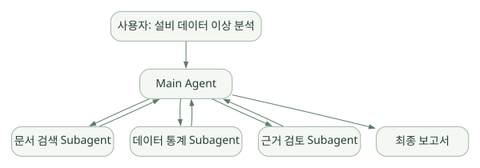

확장과 운영 / 단원 06
이력과 절차, 하위 역할 나누기
Context·외부 SessionStore·Skills·Subagents의 책임
먼저 연결해 보기
Session은 우선 대화·도구 이력이며, 외부 SessionStore는 그 Transcript를 저장·복원하는 연결점입니다. 장기 도메인 지식 검색이나 기업용 RAG가 자동으로 완성되는 것은 아닙니다.
Skill은 반복 절차를 재사용하고 Subagent는 역할을 나누어 결과를 돌려줍니다. 지침·기억·이력·외부 지식을 나누고, Skills의 로딩 기본값과 위임의 권한·비용·근거 통합 조건도 함께 확인하세요. Auto Memory의 상세 비교는 복습 페이지에 보존했습니다.
읽는 관점무엇을 저장하고 언제 읽는지, 절차가 검증된 사실을 자동 보장하는지를 구분하세요.
14. Sessions·Context·Compaction·Memory#
14.1 먼저 네 가지를 구분#
| 개념 | 의미 | 예 |
|---|---|---|
| Session | 실행 과정의 대화/Tool 기록 | user→Tool→assistant transcript |
| Context Window | 이번 모델 호출에 들어갈 수 있는 정보 범위 | 시스템 지침+대화+Tool 결과 |
| Compaction | 오래된 정보를 요약하여 Context 비용을 줄이는 과정 | 오래된 호출 기록 요약 |
| Long-term Domain Memory | 프로젝트 지식·운영 규칙을 장기간 관리하는 기능 | 반도체 SOP·분석 결과 인덱스 |
Session이 있다고 해서 자동으로 사용자별 벡터 DB 검색이나 공정 문서 RAG까지 완성된 것은 아니다. [D02], [D08], 설계
14.2 Session 동작#
공식 문서에 따르면 일반적인 세션 기록은 로컬 ~/.claude/projects/ 아래 JSONL 형태로 저장된다. resume=<session_id>로 다시 읽고, continue_conversation으로 최근 세션을 이어가거나 fork_session으로 분기할 수 있다. [D08], [D09]
# 앞선 작업에서 얻은 session_id가 있다고 가정
options = ClaudeAgentOptions(resume=session_id, max_turns=6)
async for msg in query(prompt="방금 분석한 이상 징후의 근거를 다시 정리해", options=options):
...운영 시 주의: 세션에는 민감한 Tool 인자와 결과가 저장될 수 있다. 프로젝트별 접근통제, 파일 저장 위치, 암호화, 보존 기간, 삭제 정책을 별도로 정의한다. [설계]
14.3 Context 압축#
긴 작업에서는 모든 과거 Tool 결과를 모델 Context에 그대로 포함할 수 없으므로 Claude Code는 컨텍스트를 관리하거나 압축할 수 있다. 일반적인 모델 API 직접 호출과 달리 Agent Runtime의 컨텍스트 관리 기능을 활용할 수 있다는 것이 장점이다. [D02]
하지만 압축 과정에서 숫자·단위·작업 조건·출처가 사라질 수 있다. 공정 실험 결과나 통계 계산값을 단순 자연어 요약에만 의존해서 저장하면 안 된다. 중요한 수치는 별도 영구 아티팩트/DB에 저장하고 ID로 참조한다. [설계]
14.4 Memory는 어떻게 구축하는가?#
- 프로젝트 지침:
CLAUDE.md에 상시 지켜야 할 규칙을 둠. - Skills: 반복 분석 절차를 Markdown+리소스에 저장.
- Session: 특정 사용자·작업의 대화와 Tool 실행 기록을 보존.
- Subagent memory: 특정 Agent별 파일 기반 지식/기억 소스를 구성 가능.
- RAG/MCP: 전문 문서, 운영 DB, 검색 인덱스를 별도로 연결.
즉 지침·절차·대화·외부 지식은 서로 다른 저장 체계로 설계하는 편이 안전하다. [D08], [D11], [D14]
14.5 외부 SessionStore#
공식 SDK는 SessionStore 어댑터를 제공한다. append()와 load() 등의 인터페이스를 구현해 대화 기록을 외부 데이터 저장소로 미러링하고 여러 호스트 간 재개에 활용할 수 있다. [D09]
사용자 작업 실행
→ CLI가 로컬 Session JSONL 생성
→ SDK SessionStore.append(...)로 미러링
→ 외부 DB/Object Storage 저장
다른 실행 호스트에서 resume
→ SDK SessionStore.load(...)
→ 임시 Claude 설정 디렉터리에 복원
→ CLI가 기존 Session을 재개이것은 트랜스크립트 저장·복원이지 자동 의미 검색(RAG)과 동일한 개념이 아니다. project_key와 working directory의 대응, 동시 append 순서, 인증 정보 보존, subagent subpath 보존 등이 운영 조건이다. [D09], [C08]
15. Skills·Commands·Plugins#
15.1 Skill은 ‘도구 함수’가 아니다#
Skill은 특정 작업을 수행하는 재사용 가능한 지침과 관련 리소스를 담는 패키지이다. 보통 .claude/skills/<name>/SKILL.md처럼 구성하며, 이름·설명·사용 조건을 메타데이터로 제공한다. Tool은 실제 행동을 실행하는 인터페이스다. [D11]
fab-workspace/
├── CLAUDE.md
└── .claude/
├── skills/
│ └── yield-analysis/
│ ├── SKILL.md
│ └── references/
│ └── feature_rules.md
└── settings.json15.2 Skill 내용 예시#
---
name: yield-analysis
description: 합성 수율 테이블에서 이상 분포를 확인할 때 사용
---
1. 데이터 출처와 스키마를 확인한다.
2. 누락값, 중복, 범주형 컬럼의 분포를 확인한다.
3. lot/설비/기간 단위로 요약 통계를 만든다.
4. 결과는 관측 사실과 원인 가설로 분리한다.
5. 실제 원인 확정 또는 설비 조치를 제안하지 않는다.[설계 예시] 도메인 규칙을 재사용할 수 있지만 Skill에 쓴 내용이 진실인지 검증하는 자동 장치가 되는 것은 아니다. 실측 데이터 검증은 Tool와 외부 평가로 수행한다.
15.3 Skill 로딩의 조건과 버전 차이#
공식 문서는 SDK의 skills 및 setting_sources 옵션을 설명한다. v0.2.174의 공개 Python 코드에서는 options.skills="all" 또는 개별 스킬 목록이 있으면 Tool 승인 목록에 대응 규칙을 추가하고, setting_sources가 미지정이면 user/project 소스를 기본값으로 계산한다. 반면 setting_sources=[]를 명시하면 파일에서 Skill을 찾지 못할 수 있다. [D11], [C05]
이 부분은 예전 버전의 ‘항상 setting_sources를 직접 지정해야 한다’는 설명을 그대로 반복하면 안 되는 대표적인 사례다. 공식 문서와 정확한 설치 버전의 구현을 함께 비교해야 한다.
15.4 Commands·Plugins와의 차이#
- Commands:
/compact와 같은 내장 명령,.claude/commands/에 정의된 커스텀 명령 등. - Skill: 특정 작업에 활용할 전문 지침과 자료.
- Plugin: 여러 Skills·Hooks·Subagents·MCP 설정 등을 함께 배포하는 확장 패키지.
- Tool: 파일 접근·API 호출·실제 계산 같은 실행 능력.
15.5 자동 학습과 Skill 저장은 동일하지 않다#
Skill 파일을 설치하면 Claude가 적절한 때 사용할 수 있지만, 매번 성공적인 작업을 분석해 새 Skill을 자동 생성·검증·승격하는 전체 학습 파이프라인이 기본 제공된다는 뜻은 아니다. 그런 기능이 필요하면 품질 평가, 승인·버전관리, 롤백 정책을 직접 설계해야 한다. [설계]
16. Subagents·Task 위임·멀티에이전트#
16.1 Subagent란?#
메인 Agent가 특정 작업을 전문 Agent에게 위임하고 결과를 받아 종합하는 실행 패턴이다. 분리된 역할, 컨텍스트, Tool 목록, 모델 설정을 활용할 수 있다. [D14]
넓은 도식은 가로로 이동하며 읽을 수 있습니다. 도식 크게 보기 ↗

원문에 수록된 학습용 도식입니다. 노드·화살표·분기 라벨을 보존해 다시 배치했습니다. 세부 조건과 예시·구현의 구분은 앞뒤 본문을 함께 읽으세요.
도식 원문 보기 (Mermaid)
flowchart TB
U[사용자: 설비 데이터 이상 분석] --> O[Main Agent]
O --> A[문서 검색 Subagent]
O --> B[데이터 통계 Subagent]
O --> C[근거 검토 Subagent]
A --> O
B --> O
C --> O
O --> V[최종 보고서]16.2 프로그래밍 정의 예시#
from claude_agent_sdk import AgentDefinition, ClaudeAgentOptions
options = ClaudeAgentOptions(
agents={
"stat-reviewer": AgentDefinition(
description="합성 데이터의 통계 분석 검토가 필요할 때 위임",
prompt="당신은 통계 검토자다. 수치, 단위, 표본 수를 확인하고 검증 불가능한 원인 추정은 분리하라.",
tools=["Read", "Grep"],
),
},
)공식: [D14], [D03] 주의: tools=["Read", "Grep"] 같은 서브에이전트 도구 설정만으로 OS 파일 접근 범위와 기업용 DB 권한이 정해지는 것은 아니다. 실행 주체별 데이터 권한을 별도로 통제한다.
16.3 위임에 따른 실익#
- 컨텍스트 분리: 주 Agent에 불필요한 중간 자료를 덜 노출.
- 작업 전문화: 검증용 Agent와 데이터 처리용 Agent를 분리.
- Tool 권한 분리: 역할별 노출 도구 최소화.
- 독립 추적: 어느 Subagent가 어떤 근거를 생성했는지 기록.
16.4 한계#
- 여러 Agent를 사용하면 모델 호출·토큰·오류 가능성이 늘어날 수 있다.
- Agent별 추론이 서로 다를 때 어느 결과를 채택할지 별도 합의·검증 로직이 필요하다.
- 생성 결과의 독립성이 충분하지 않으면 ‘여러 Agent가 같은 오류를 반복’할 수 있다.
- 병렬 실행·백그라운드 작업·depth/concurrency 제한은 CLI 버전의 공식 지원 범위에서 검증한다. [D14]
16.5 명시적 Workflow vs 자율 위임#
자율 위임: Main Agent가 언제 어느 Subagent를 부를지 판단. 탐색에 유연하지만 실행 경로가 달라질 수 있다.
명시적 Workflow: 앱 코드가 조회→통계→검증→승인 순서를 강제. 운영상 재현성이 높고 업무 규칙을 집행하기 쉽다.
반도체 데모 권장: 탐색과 설명 부분에는 자율성을 주되, 정형 데이터 추출·검증·최종 보고서 승인과 같은 단계는 외부 서비스의 명시적 워크플로로 감싸는 혼합형 구성을 검토한다. [설계]